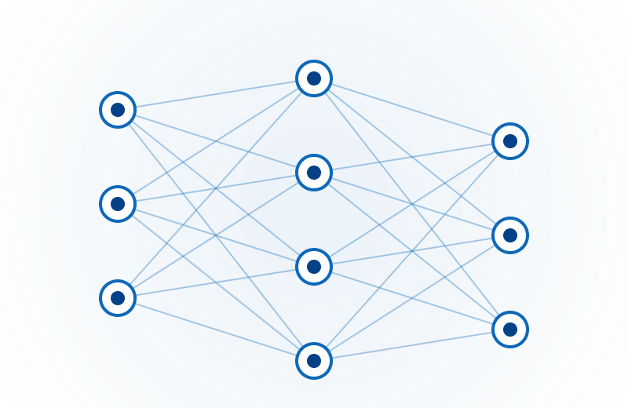

A consolidated Microsoft Fabric estate with Direct Lake performance, right-sized capacity, and no break in business reporting.

Synapse workloads were fragmented across pools with inconsistent performance and an unclear capacity bill. The business needed Direct Lake performance without going dark during the move.
How we structured the work, end to end.
From source to insight, in one governed flow.
Other engagements with a similar shape.
A continuously-running AI operations platform where specialist agents do the repetitive work, and the human team focuses on judgement.
A portable, automation-first warehouse architecture that adapts to schema drift and deploys across multiple cloud targets from one source.
A unified analytics model across service desk, ERP and document sources, with ML-assisted extraction and live service-operations dashboards.
Start with a conversation. We'll map the process, pressure-test the goal, and come back with a plan.
Start a Conversation →